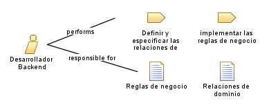

| Role: Desarrollador Backend |
 |
|
 |
||
| Primary Performs | ||
|---|---|---|
| Modifies |
|
|
|
Responsable de implementar las reglas de negocio identificadas por los analistas en el código del back-end. Trabaja en estrecha colaboración con los analistas de negocio y los analistas de requerimientos para comprender los requisitos y las especificaciones del sistema. Su tarea principal es desarrollar la lógica del negocio, asegurando la correcta manipulación de los datos financieros, la integración con otros sistemas y la implementación de funcionalidades como la generación de facturas, el seguimiento de pagos y la generación de informes financieros. |
| Skills |
Desarrollo de software, programación, implementación de reglas de negocio, integración de sistemas, resolución de problemas técnicos, trabajo con bases de datos, conocimientos de lenguajes de programación, trabajo en equipo
|
|---|---|
| Assignment Approaches | Programador BackEnd |